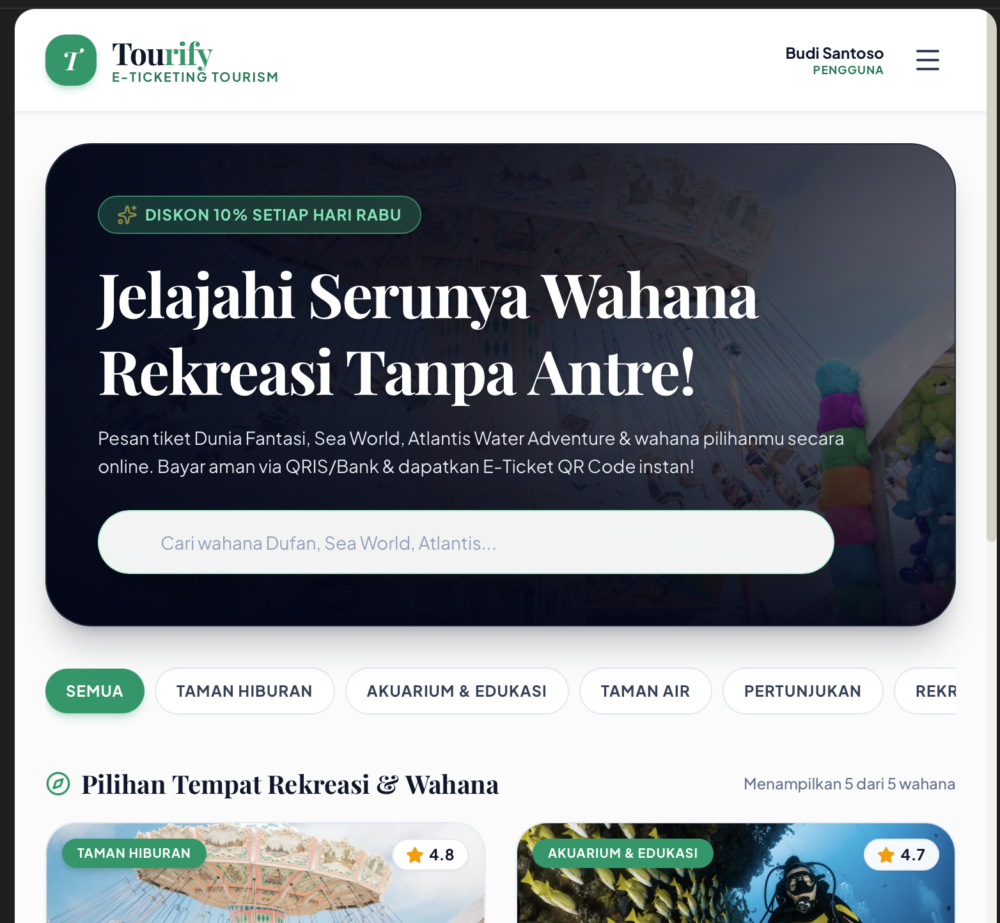
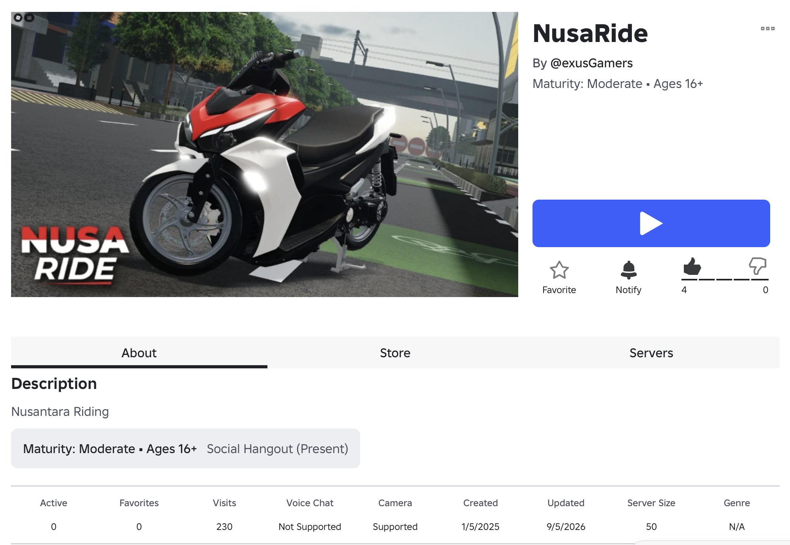
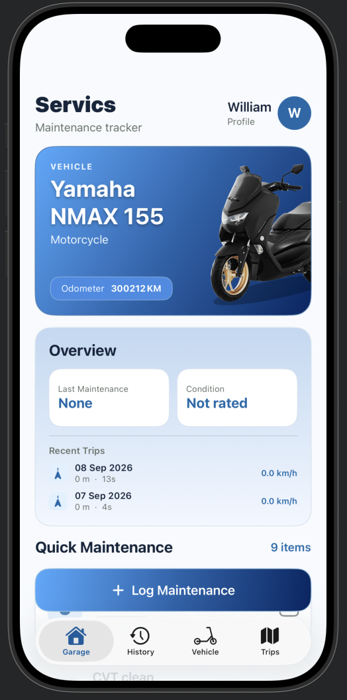
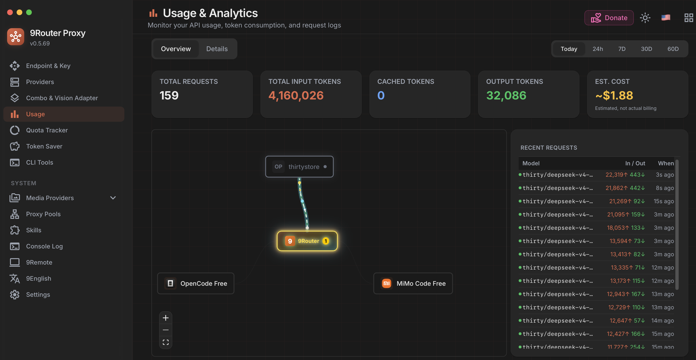

Halo, Saya William hakeem atallah
Siswa XI RPL 1 - Professional Pemecut AI
Saya adalah seorang siswa SMK yang tertarik dengan dunia Software Engineer, 3D Modeller , Dan saya suka Vibe Coding
Hubungi Saya
Saya adalah seorang siswa SMK yang tertarik dengan dunia Software Engineer, 3D Modeller , Dan saya suka Vibe Coding
Hubungi SayaSaya adalah siswa SMK Telkom Bandung jurusan PPLG. Sekarang saya duduk di kelas 11. Saya berminat menjadi Mobile App Developer. Selain coding, saya juga commission 3D modelling.
Tambahkan gambar proyek

Membuat Web Pemesan ticket yang bisa menggunakan kamera hp untuk scan ticket Berbasis React, Fast.api
Tambahkan gambar proyek

Nusaride adalah salah satu game Roblox Berbasis .Luau yang saya buat untuk project.
Tambahkan gambar proyek

adalah aplikasi manajemen kendaraan untuk membantu pengguna mengelola informasi, perawatan, riwayat servis, dan tracking perjalanan kendaraan dalam satu aplikasi.
Tambahkan gambar proyek

Menyambungkan API AI ke dalam Terminal yang dimana bisa mengakses file kita dan juga merubah